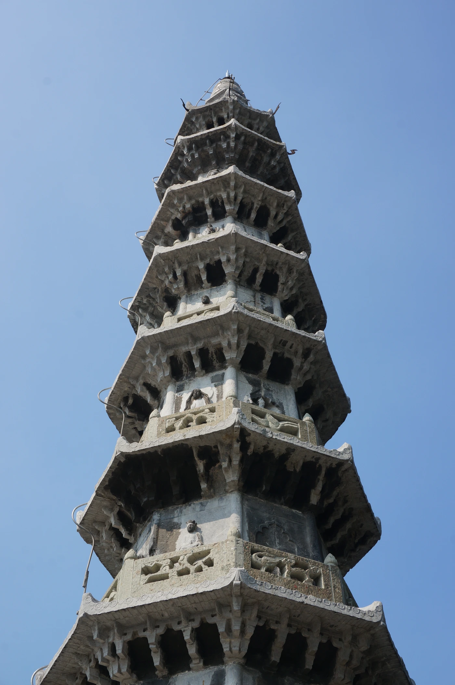
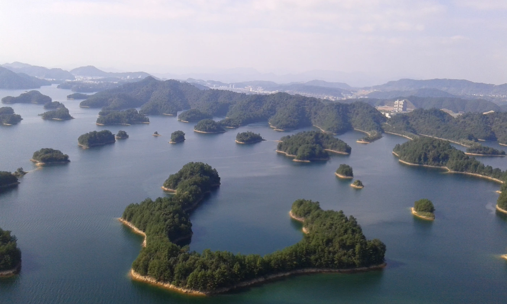
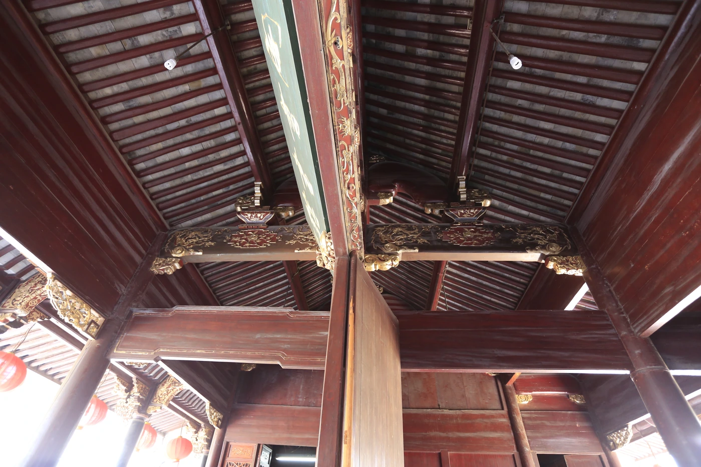
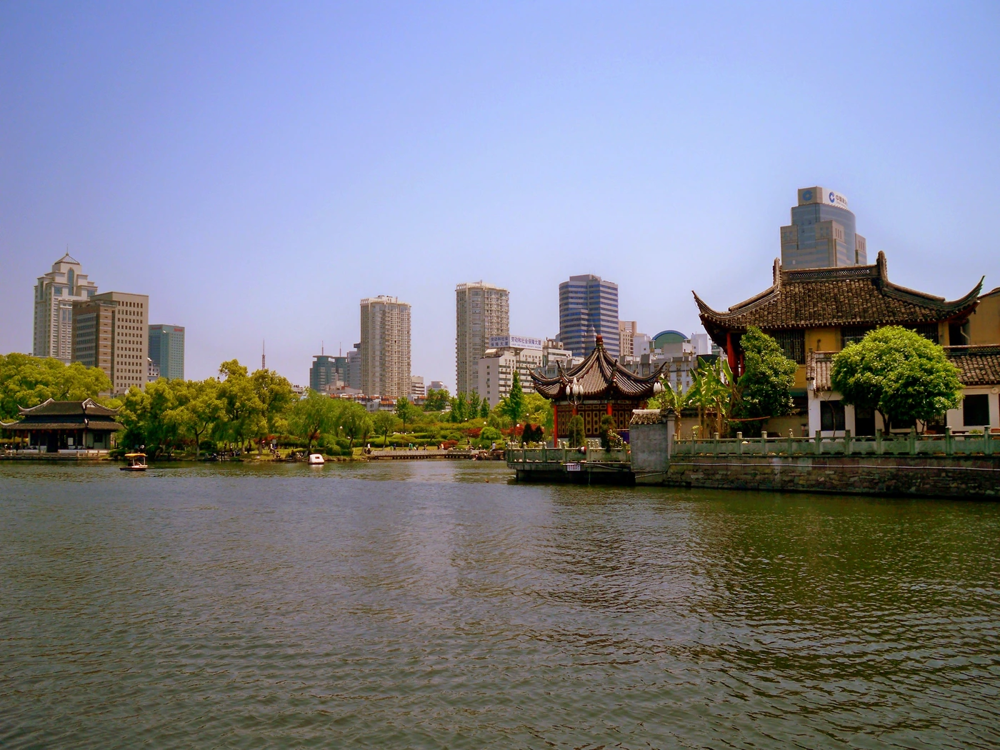
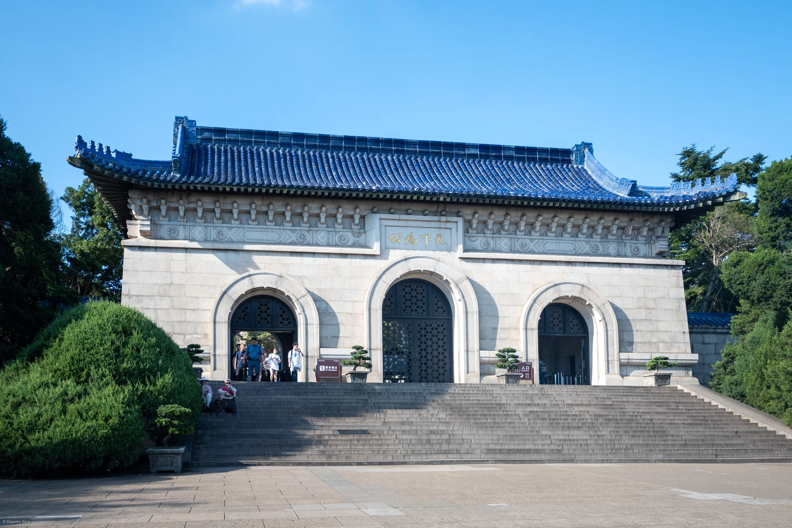
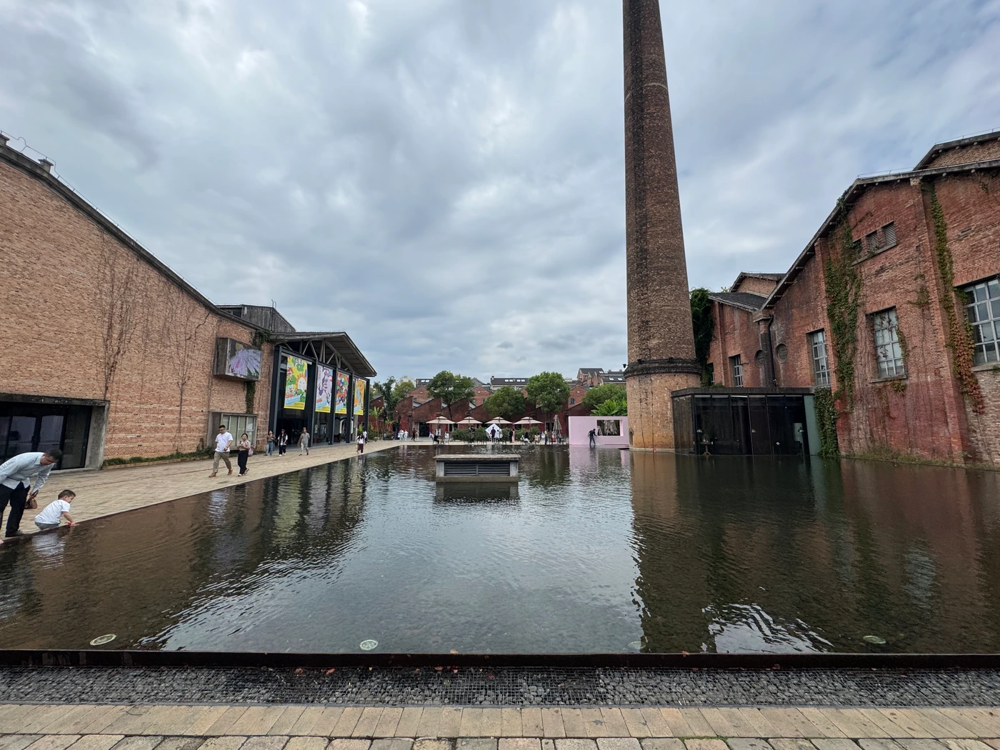
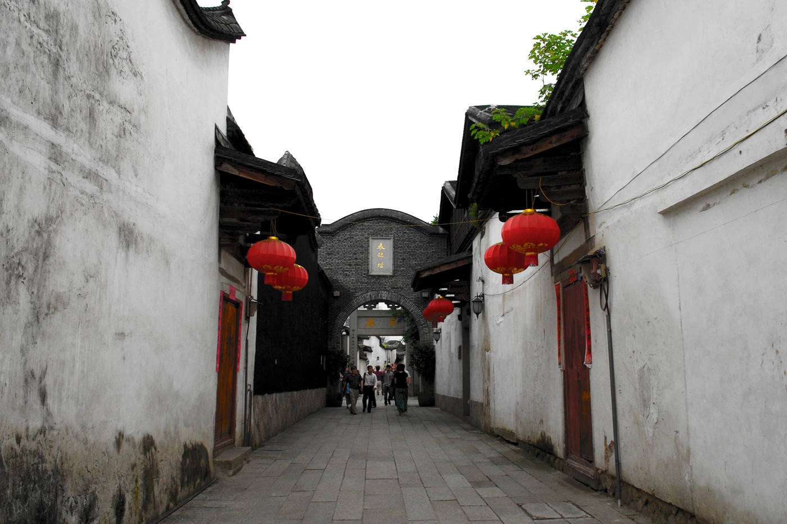

沿着照片，
走近真实的风景。
水巷的日与夜，廊下的树影，湖上的一叶游船。42张实景照片，29条旅程：景色丰富的地方，多留几个观看的角度。
照片拍摄于不同年份与季节，作者、日期和来源见图下。点击照片可放大欣赏。
按目的地找照片 · 29条路线
城市与近郊
周边城市
远方旅行
西湖
L01 · 1幅实景
西湖·游船、西泠桥与绿山
游船在前，西泠桥与绿山在后，春日湖景层层展开。
云栖竹径
L02 · 1幅实景
云栖竹径·竹林小径
竹林夹着弯曲石径，向林中慢慢延伸。 历史照片（2004年）。
径山寺
L03 · 1幅实景
径山寺·层叠屋脊与山林
从层叠灰瓦望向藏经阁与山林，晴日的寺院有了纵深。 历史照片（2023年）。
西溪湿地
L04 · 1幅实景
良渚博物院与版本馆
L05 · 3幅实景
良渚博物院·石墙与水庭倒影
浅色石墙映入池水，夏日绿意围合着安静的建筑。 历史照片（2015年）。

杭州国家版本馆·青绿屏扇与水庭松影
青绿屏扇沿水庭展开，一株松树立在水中央。

良渚博物院·树影回廊
绿叶、白柱与斑驳日光，构成一段安静的回廊。 历史照片（2015年）。
拱宸桥与运河
L06 · 2幅实景
拱宸桥·运河桥影
三孔石桥跨过运河，暖色侧光照亮桥身。 历史照片（2023年）。

香积寺·石塔细部
仰望层层塔檐与石雕，晴空衬出清晰的建筑轮廓。 历史照片（2014年）。
之江
L07 · 1幅实景
之江馆·圆窗大厅
圆窗把天光引入高挑的大厅，层层回廊与石材倒影展开省博之江馆的建筑节奏。 历史照片（2023年）。
青山湖
L08 · 1幅实景
青山湖·水上森林
春日的杉林立在浅水之中，树影与倒影排成一片安静的森林。 历史照片（2025年）。
湘湖
L09 · 1幅实景
湘湖·荷塘与远山
荷花铺满水面，垂柳与远山围出一幅明亮的湘湖小景。 历史照片（2023年）。
吴山脚下的南宋城
L10 · 1幅实景
南浔水乡
N01 · 2幅实景
南浔·蓝调水巷与临河灯影
蓝调暮色里，临河木廊与暖灯一起映入水巷。 历史照片（2016年）。

南浔·斜阳水巷与红篷船
斜阳掠过白墙与木廊，红篷船沿水巷驶来。与夜景为同一水巷的日夜对照。 历史照片（2016年）。
德清新市
N02 · 1幅实景
新市·驾仙桥与临水楼
石拱桥旁的木楼面向水巷，走桥、看檐、坐茶馆都可以慢下来。 历史照片（2015年）。
宣城
N04 · 2幅实景
敬亭山·竹径
竹林在山道上方交叠成绿色拱顶，几位行人让林间小路有了尺度。 历史照片（2025年）。

敬亭山·山前茶园
一垄垄茶树沿坡展开，冬日红叶把山前的茶园染出另一层色彩。 历史照片（2012年）。
绩溪
N05 · 1幅实景
龙川·白墙门楼
蓝天下的粉墙、层叠山墙和石板前庭，呈现龙川徽派建筑的清朗轮廓。 历史照片（2021年）。
黄山屯溪
N06 · 1幅实景
千岛湖
N07 · 2幅实景
千岛湖·近岸岛湾
松林覆盖的岛岸围出一湾碧水，蓝天与白云在湖面前舒展开来。 历史照片（2022年）。

千岛湖·层叠岛湾
岛屿像绿色山脊伸入湖面，远山与水湾层层展开。 历史照片（2015年）。
绍兴
N08 · 1幅实景
绍兴·三味书屋
木桌、匾额和书斋陈设，把鲁迅笔下的读书空间留在温暖的光影里。 历史照片（2023年）。
宁波
N09 · 4幅实景
天一阁·尊经阁
浓绿树影掩映重檐楼阁，庭院里的书香与江南园林气息相互交织。 历史照片（2009年）。

宁波月湖·树荫水岸
沿树荫下的湖岸望去，小桥与湖水把城市中的慢行时光串在一起。 历史照片（2018年）。

天一阁·彩绘梁架
天一阁南入口厅堂的彩绘梁架细部，展现传统木构与色彩；并非藏书楼内部。 历史照片（2013年）。

宁波月湖·晴日亭岸
亭台临水，树色与城市楼宇在晴日湖畔交织。历史照片（2009年）。
南京
N10 · 2幅实景
中山陵·祭堂与蓝天
白色石墙、蓝色屋瓦与苍翠松柏，在晴空下勾勒出祭堂的庄重轮廓。 历史照片（2024年）。

中山陵·陵门与松影
蓝天、青瓦与浅色石门组成庄重的参观轴线。 历史照片（2024年）。
景德镇御窑博物馆
F01 · 2幅实景
景德镇·御窑博物馆
红砖拱券、蓝天与水面，是御窑博物馆鲜明的建筑风景。 历史照片（2019年）。

陶溪川·厂房烟囱与水庭
红砖厂房、旧烟囱和水面倒影，让工业遗产有了新的街区尺度。 历史照片（2024年）。
婺源
F02 · 1幅实景
武夷山
F03 · 2幅实景

福州
F04 · 2幅实景
三坊七巷·南后街北口
石牌坊、沿街灯笼与人来人往的街巷，串起福州老城的日常。 历史照片（2023年）。

三坊七巷·衣锦坊巷道
白墙、青石与红灯笼，让视线沿着窄巷延伸。 历史照片（2012年）。
厦门
F05 · 1幅实景
厦门·中山路灯火
夜色里的骑楼、廊柱与暖黄灯光，围合出适合慢慢走的老城街景。 历史照片（2017年）。
南昌
F06 · 1幅实景
滕王阁·彩绘与重檐细部
仰看彩绘梁架与层层纹饰，在一座楼里细读南昌的建筑色彩。 历史照片（2024年）。
武汉
F07 · 1幅实景
湖北省博物馆·曾侯乙编钟
层层青铜编钟与朱红钟架相映，纹饰和阵列展现荆楚礼乐的宏大气象。 历史照片（2023年）。
长沙
F08 · 1幅实景
岳麓山·爱晚亭秋色
红叶掩映绿瓦重檐，爱晚亭的秋色让山林多了一层温暖。 历史照片（2016年）。
洛阳
F09 · 1幅实景
龙门石窟·奉先寺
石壁与唐代造像在晨光中显出层次，开阔视角让人感受到奉先寺的尺度。 历史照片（2018年）。
重庆
F10 · 1幅实景
重庆·山城巷廊道
木柱、坡阶与沿崖廊道层层相接，窄窄的纵深里藏着山城的立体感。 历史照片（2023年）。
还有一处，等一张好看的实拍。
安吉余村 · 实景照片待补，行程与地图仍可查看。